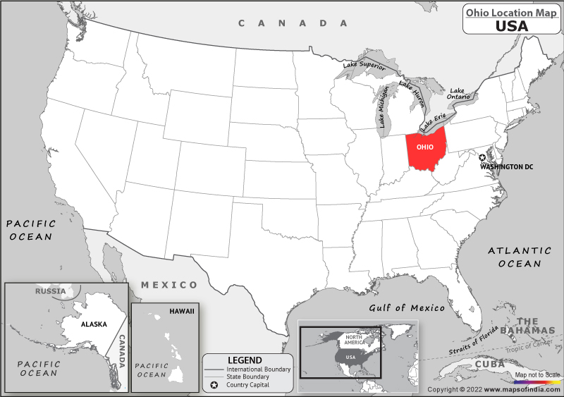

Welcome to Ohio
"Ohio derives its name from the Ohio River that forms its southern border, which, in turn, originated from the Seneca word ohiːyo', meaning "good river", "great river", or "large creek". The state was home to several ancient indigenous civilizations, with humans present as early as 10,000 BCE. It arose from the lands west of the Appalachian Mountains that were contested by various native tribes and European colonists from the 17th century through the Northwest Indian Wars of the late 18th century. Ohio was partitioned from the Northwest Territory, the first frontier of the new United States, becoming the 17th state admitted to the Union on March 1, 1803, and the first under the Northwest Ordinance.It was the first post-colonial free state admitted to the union and became one of the earliest and most influential industrial powerhouses during the 20th century. Although it has transitioned to a more information- and service-based economy in the 21st century, it remains an industrial state, ranking seventh in GDP as of 2019, with the third-largest manufacturing sector and second-largest automobile production." - Wikipedia
Data
| City/Region | Population | Demonyms | Median Income | Incorporation/Admitted to the Union |
|---|---|---|---|---|
| Ohio | 11,780,017 | Ohioan; Buckeye | 35,981 | 1803 |
| Columbus | 905,748 | Columbusite | 37,121 | 1812 |
| Cleveland | 372,624 | Clevelander | 25,325 | 1836 |